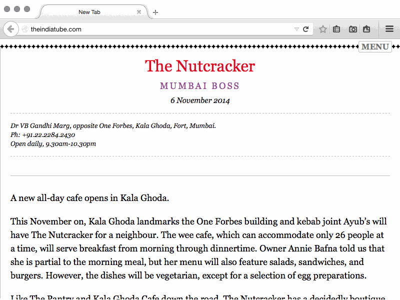
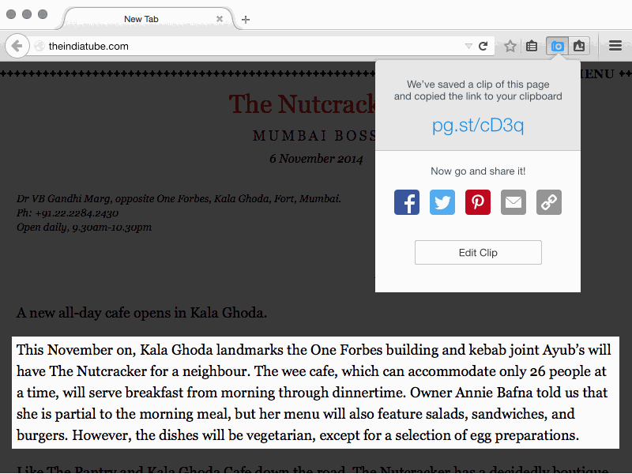
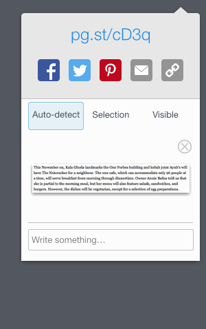
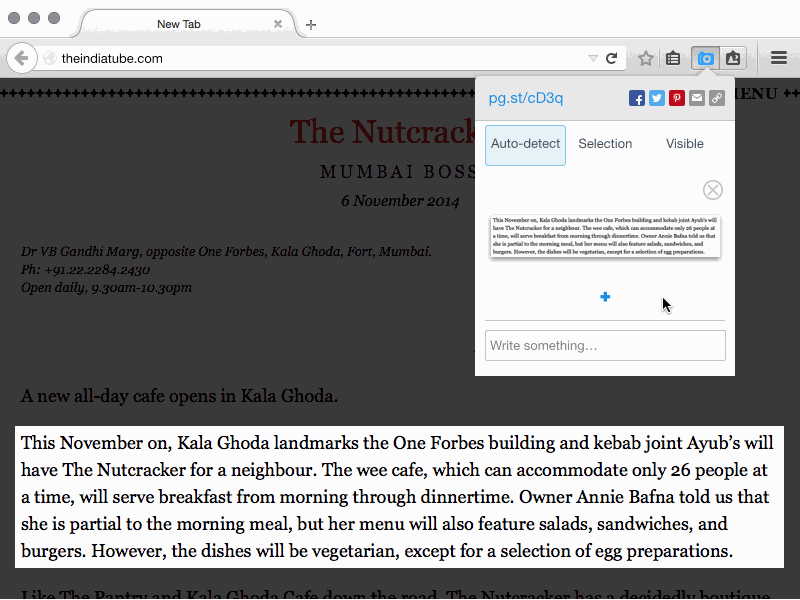
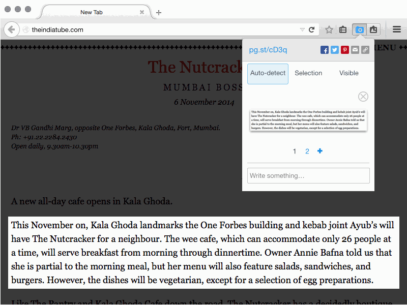

<div class="container">
	<div class="row">
		<div class="col-sm-12 col-md-12 col-lg-12">
  		
			<h1>Shot Panel</h1>
			
		  <h3>Open Shot panel</h3>
		  <p class="longText">PageShot link is automatically copied to clipboard.</p>
			
			
		  <h3>Enter edit mode</h3>
			
			
			<h3>Add comment, name and account</h3>
			
			
			<h3>Edit existing element</h3>
			
			
			<h3>Add new element</h3>
			
			<p class="longText">4 types of elements that can be added:</p>
			<ul class="longText">
				<li><strong>Automatic</strong>: PageShot will try its best to guess what’s most relevant on the page</li>
				<li><strong>Manual</strong></li>
				<li><strong>Visible area</strong></li>
				<li><strong>Text</strong>: the only mode that doesn’t save a pixel; instead, it saves the element as DOM text</li>
			</ul>
			<p class="longText">When an element is added, it’s assigned a number below the thumbnail (see below).
			
			<h3>Moving between elements</h3>
			

		</div>
	</div>
	<!-- Pagination. If you have more than one page, set the multipage variable in the Frontmatter to true. Editing the pagination code happens in /_includes/homePagination.html.
		NOTE: This is currently broken in the Jekyll ver of this template.
		-->
		{% if page.multipage %}
			{% include homePagination.html %}
		{% endif %}
